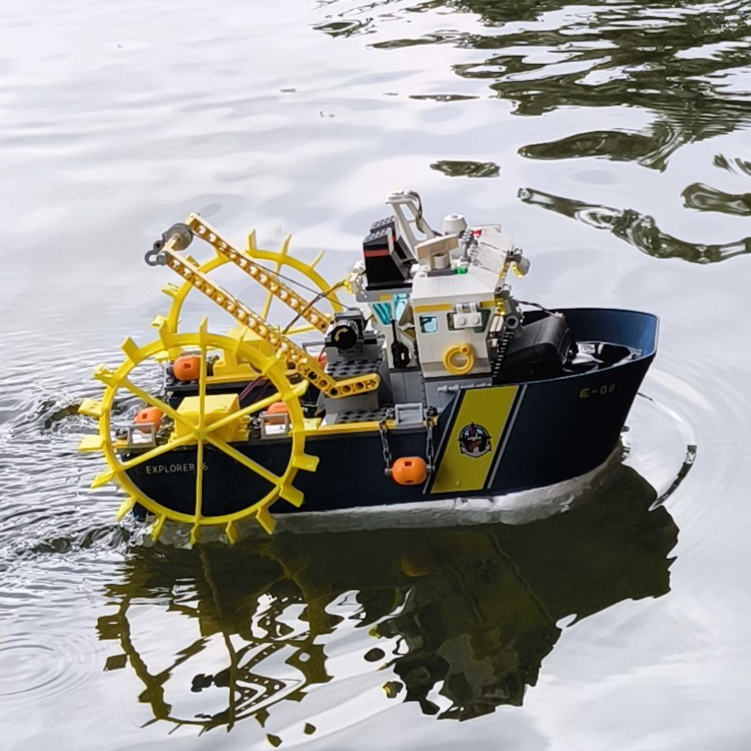
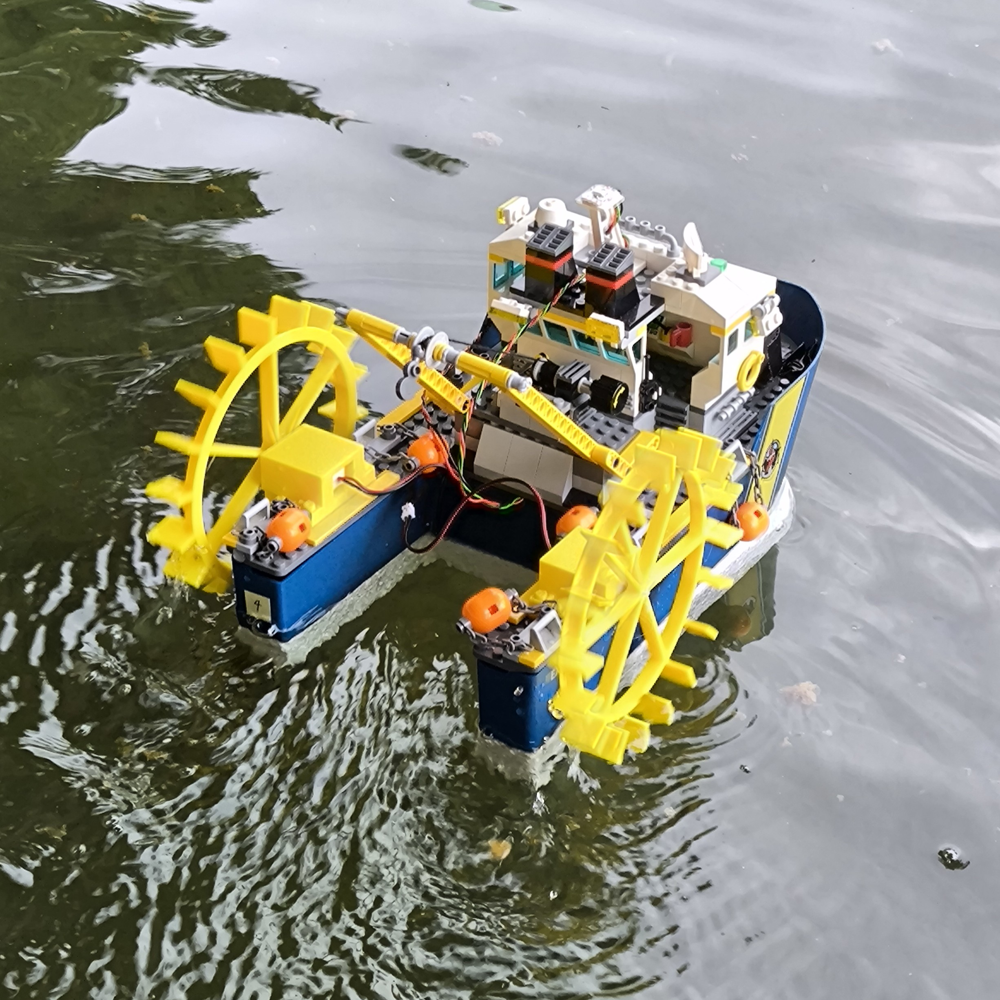

Mini Kenterprise Special Edition
LEGO Mini Kenterprise
LEGO Mini Kenterprise pairs the standard Mini Kenterprise electronics with two 3D-printed paddle wheels, driven by waterproof N20 gear motors, bolted onto a LEGO boat hull. This is a fixed reference build, made for builders who want to reproduce this particular project rather than configure a boat.

Reference bill of materials
This list documents the reference build only. It intentionally has no purchasing links, as I won't be able to keep them up to date. Refer to the original Kenterprise components for sourcing. You will have to search for the special parts yourself in your online store of choice.
| Part | Qty. | Reference notes |
|---|---|---|
| LEGO boat hull | 1 | Provides the hull and superstructure. Any similarly-sized LEGO ship set works - ours was an exploration/tug-style set. |
| Waterproof N20 gear motor | 2 | One motor drives each paddle wheel. Sourced as "DC 3V 6V Waterproof N20 DC Gear Motor 48RPM-96RPM Slow Speed". |
| 5V USB power bank | 1 | Powers the whole boat directly - no separate battery, charger, or booster circuit needed. |
| Wemos D1 Mini | 1 | Microcontroller for the control platform, same as the standard build. |
| DRV8833 dual H-bridge driver | 1 | Drives the two motors. |
| Prototype board and pin headers | 1 | For the controller and power wiring. |
| Toggle switch | 1 | Main power switch. |
| Hookup wire, heat-shrink tubing, M3 hardware, and standoffs | As needed | Choose lengths to suit the printed motor mounts and your wiring. |
3D-printable parts
Print two of each - one motor mount and one paddle wheel per side. Download links point directly to the project repository.
Reference build
